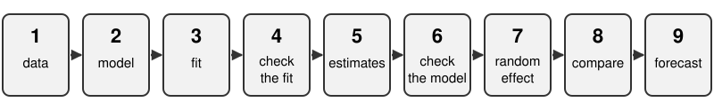

Recipe Index
Last updated on 2026-11-24 | Edit this page

The nine-step workflow. Each recipe below
belongs to one of these steps.
Print this page and keep it next to you while you work. The functions
these recipes use are in your my-recipes.R and in the finished recipe box (cookbook.R). In the
table, m is any fitted model, df is one
stock’s data frame, and nll_x, start_x stand
for any model function and its starting values. CI is a confidence
interval, PI a prediction interval, SD a standard deviation and AIC the
Akaike information criterion.
Which Recipe Do I Need?
| I want to… | Recipe | Check it worked | Episode |
|---|---|---|---|
| look at one stock | my_stock <- filter(sockeye, stock == "Stellako") |
rows and units as expected | 01 Introduction |
| make a data list | dat <- make_dat(my_stock, S_new = mean(tail(my_stock$spawners, 4))) |
S, logRS, year
have one value per row |
03 Likelihoods |
| write a model |
getAll(); OBS();
mu, mu_new, ADREPORT(mu_new);
-sum(dnorm(..., log = TRUE))
|
obj$fn(obj$par) is a finite number |
03 Likelihoods |
| choose starting values |
start_ricker(dat),
start_bh(dat), start_walk(dat)
|
as above | 03 Likelihoods, 06 Random Effects |
| fit a model | m <- fit_model(nll_x, start_x(dat), dat) |
no error | 04 Fitting and Checking |
| tell whether a fit can be used | m$checks |
four TRUE | 04 Fitting and Checking |
| report estimates | ci_table(m) |
natural scale, units, 95% CI | 05 Uncertainty |
| report a derived quantity |
log_x <- ...; ADREPORT(log_x) in the
function; ci_table(m, "report")
|
a row named x
|
05 Uncertainty |
| draw a curve with its band |
S_new as a grid; refit;
predict_recruits(m, "confidence", 0.95)
|
band widest where data are sparse | 05 Uncertainty |
| let a quantity drift over time |
nll_walk,
random = "log_alpha_year"
|
four TRUE; sd_walk read in words |
06 Random Effects |
| plot the drift |
ci_table(m, "random") +
geom_ribbon()
|
last row is the forecast year | 06 Random Effects |
| deal with an SD near zero | refit from log(0.001); compare AIC with
the simpler model |
same negative log-likelihood; AIC + 2 | 06 Random Effects |
| check residuals |
osa_residuals(m); QQ plot; against year
and spawners; lag1()
|
lag-1 within ±2/sqrt(n) | 07 Residuals |
| ask whether the model can make data like mine | simulate_stat(m, lag1) |
the real value is inside the simulated range | 08 Simulation |
| ask whether the recipe recovers the truth | self_test(m, n_sim = 30) |
refits pass; medians near the truth | 08 Simulation |
| compare models | aic_table(list(a = m1, b = m2)) |
same rows; all checks TRUE | 09 Comparing Models |
| add a covariate |
left_join() by year;
+ b_x * x in mu and mu_new; start
b_x = 0
|
no NA; CI for b_x
|
09 Comparing Models |
| let groups differ | a group index;
dnorm(group_values, mean, exp(log_sd));
random =
|
estimates shrink towards the mean | 10 Many Stocks |
| share good and bad years across groups |
+ year_effect[year] in mu;
dnorm(year_effect, 0, exp(log_sd_year));
random = c("log_alpha_stock", "year_effect")
|
four TRUE; both SDs have usable intervals; AIC drops | 10 Many Stocks |
| forecast | predict_recruits(m) |
median with 80% PI, units | 11 Forecasting |
| test forecasts |
hc <- bind_rows(m = hindcast(m, df, 2007), naive = naive_forecast(df, 2007), .id = "model");
score_forecasts(hc)
|
all(hc$fit_ok) is TRUE; skill below 1
beats the benchmark |
11 Forecasting |
| use my own data |
read.csv(); rename() columns
to brood_year, spawners,
recruits; arrange(brood_year)
|
one row per year, in time order, no
NA
|
12 Capstone |
The Reference page defines every term. If something goes wrong, the Troubleshooting page lists the messages and their fixes.
Rules Cards
The Four Checks
finished, flat, curved,
finite_se. All four must be TRUE before you use a fit.
The Three Residual Checks
- Shape: the QQ plot follows its line.
- Pattern: no trend against brood year or against spawners.
- Independence: the lag-1 correlation is within ±2/sqrt(n), where n is the number of years.
The Four AIC Rules
- Same rows, same response (
logRS), and every fit passes all four checks. - Choose the candidate models before you look at results: one question per model.
- A difference under 2 is a tie: prefer the simpler model, or report both. Over 10 is decisive. In between, favour the lower AIC and look at residuals and forecasts.
- A random effect whose SD collapses to zero adds about 2 to AIC. That means the data cannot detect the variation, not that it is absent.
The Forecast Scores
- Bias: near 0. Above 0, forecasts were too high.
- Mean absolute error (MAE): smaller is better.
- Skill: below 1 beats the benchmark.
- 80% coverage: near 0.80.